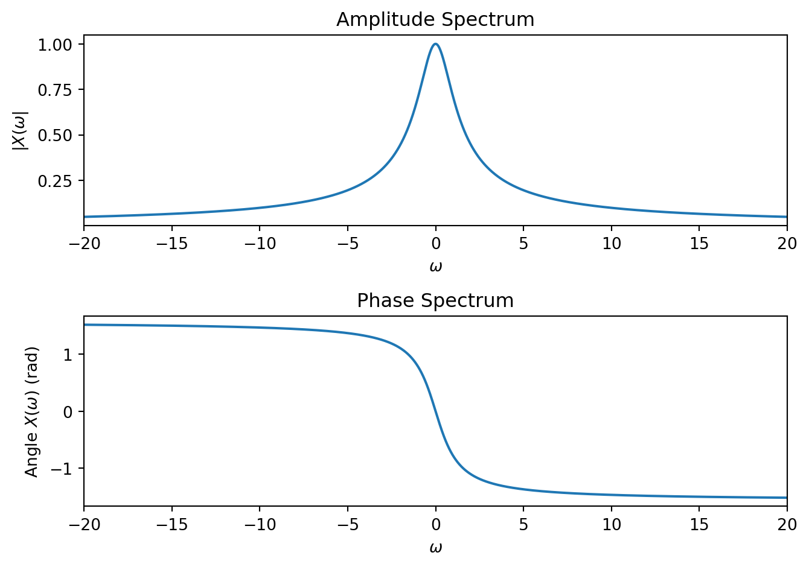

Recall the complex exponential \(e^{st}\) for \(s\in\mathbb{C}\) is the Eigenfunction of CT LTI systems. If we can decompose an input into a (possibly infinite) sum of such signals, we can easily determine the output using the superposition principle. In this section we consider the decomposition when the input is aperiodic, called the CT Fourier Transform (CTFT).
In contrast to the CT Fourier series, in this case the complex exponent of the Eigenfunction becomes \(s = j\omega\) a continuous variable, and the decomposition is an uncountably infinite sum (integral). This gives the input-output relationship for a stable LTI system as \[x(t) = \frac{1}{2\pi}\int\limits_{-\infty}^{\infty} X(j\omega) \, e^{j \omega t}\; d\omega \;\longrightarrow\; y(t) = \frac{1}{2\pi}\int\limits_{-\infty}^{\infty} H(j\omega) X(j\omega) \, e^{j \omega t}\; d\omega\] where \(H(j \omega)\) are the Eigenvalues, again called the frequency response. We now turn to determining under what circumstances the decomposition exists and how to find the function \(X(j\omega)\).
Note: The difference in notation between \(X(\omega)\) and \(X(j\omega)\) is superficial. They generally are the same function. The latter just emphasizes that \(s \rightarrow j\omega\). For example \[H(j\omega) = \frac{1}{1+(j\omega)^2} = \frac{1}{1-\omega^2} = H(\omega)\] are the same function since \(j^2 = -1\).
16.1 Synthesis and Analysis Equation
Consider the aperiodic signal \[x(t) = \begin{cases}
p(t) & A < t < B\\
0 & \text{else}
\end{cases}\] and it’s periodic extension with fundamental frequency \(\omega_0 = \frac{2\pi}{T_0}\)\[x_p(t) = \sum\limits_{m = -\infty}^{\infty} x(t-mT_0)\] where \(T_0 > B-A\). For example:
Example of a finite-length signal and its periodic extension.
The CT Fourier series coefficients are \[\begin{aligned}
a_k &= \frac{1}{T_0} \int\limits_{T_0} x_p(t) e^{-jk\omega_0 t}\; dt\\
&= \frac{1}{T_0} \int\limits_{-\infty}^{\infty} x(t) e^{-jk\omega_0 t}\; dt \mbox{ since } x(t) = 0 \mbox{ outside the interval } (A,B)\\
\end{aligned}\] Define the CT Fourier Transform of \(x(t)\) as \[\boxed{X(\omega) = \int\limits_{-\infty}^{\infty} x(t) e^{-j\omega t}\; dt}\] so that \[a_k = \frac{1}{T_0} X(k\omega_0)\] are samples of \(X(\omega)\) spaced at frequencies \(\omega_0\). By the CT Fourier series synthesis equation \[x(t) = \sum\limits_{k = -\infty}^{\infty} \frac{1}{T_0} X(k\omega_0) e^{jk\omega_0 t}\] Now, let \(T_0 \rightarrow \infty\) so that the periodic copies move toward \(\infty\) and \(x_p(t) \rightarrow x(t)\). At the same time the frequency sample spacing becomes infinitesimal and \[X(k\omega_0) e^{jk\omega_0 t} \rightarrow X(\omega) e^{j\omega t}\; d\omega\] To give the Inverse Fourier Transform\[\boxed{x(t) = \frac{1}{2\pi} \int\limits_{-\infty}^{\infty} X(\omega)e^{j\omega t}\; d\omega}\] This gives the Fourier Transform Pair: \[\underbrace{X(\omega) = \mathcal{F}\{x(t)\} = \int\limits_{-\infty}^{\infty} x(t) e^{-j\omega t}\; dt}_{\text{Forward Transform / Analysis Equation}}
\hspace{3em}
\underbrace{x(t) = \mathcal{F}^{-1}\{X(\omega)\} = \frac{1}{2\pi} \int\limits_{-\infty}^{\infty} X(\omega)e^{j\omega t}\; d\omega}_{\text{Inverse Transform / Synthesis Equation}}\] The forward transform decomposes \(x(t)\) into an infinite number of complex sinusoids. The inverse transform synthesizes a signal as an infinite sum of the sinusoids. It is an example of an Integral Transform. Note the signal \(x(t)\) and \(X(\omega)\) are the same signal, just represented in different domains, the time-domain and frequency-domain respectively.
Similar to the CT Fourier series, the function \(X(\omega)\) is called the spectrum of the signal \(x(t)\). The magnitude spectrum is the function \(|X(\omega)|\) and the phase spectrum is the function \(\angle X(\omega)\). It is common to plot the spectrum as the combination of the magnitude and phase spectrum.
16.2 Examples of the CT Fourier Transform
Fourier Transform of the impulse.
Consider the signal \(x(t) = \delta(t)\). The Fourier transform is
\[\begin{aligned}
X(\omega) &= \int\limits_{-\infty}^{\infty} x(t) e^{-j\omega t}\; dt\\
&= \int\limits_{-\infty}^{\infty} \delta(t) e^{-j\omega t}\; dt\\
&= e^{-j\omega (0)} \mbox{ by the sifting property}\\
&= 1
\end{aligned}\]
Fourier transform of the causal real exponential.
Consider the signal \(x(t) = e^{at}u(t)\) for \(a\in \mathbb{R}\). The Fourier transform is
\[\begin{aligned}
X(\omega) &= \int\limits_{-\infty}^{\infty} x(t) e^{-j\omega t}\; dt\\
&= \int\limits_{0}^{\infty} e^{at} \, e^{-j\omega t}\; dt\\
&= \int\limits_{0}^{\infty} e^{(a-j\omega) t}\; dt\\
&= \frac{1}{a-j\omega } e^{(a-j\omega) t} \Big|_{0}^{\infty}\\
&= \frac{1}{a-j\omega } \left[ \lim_{T\rightarrow\infty} e^{(a-j\omega) T} - \underbrace{e^{(a-j\omega) (0)}}_{1}\right]
\end{aligned}\]
This example raises the question, of when does the Fourier Transform exist? Note if \(a < 0\) then the limit above converges to zero, otherwise the integral diverges. In the former case we say the Fourier transform exists, and in the latter that it does not. Thus
\[X(\omega) = \frac{-1}{a-j\omega } = \frac{1}{j\omega-a} \mbox{ for } a < 0\;.\]
Note when \(a < 0\), \(x(t)\) is an energy signal. A sufficient, but not necessary condition for the Fourier transform to exist is that the signal be an energy signal.
For this example, let’s examine the spectrum, noting \[|X(\omega)| = \frac{1}{(a^2 + \omega^2)^\frac{1}{2}} \hspace{2em}\mbox{and}\hspace{2em} \angle X(\omega) = -\arctan\left( \frac{\omega}{-a}\right)\] plotted below for \(a = -1\).

Figure 16.1: Magnitude and phase spectrum for the example.
Fourier transform of a complex sinusoid.
Consider the signal \(x(t) = e^{j\omega_0 t}\) for \(\omega_0\in \mathbb{R}\). The Fourier transform is
since the average value of a sinusoid is zero. When \(\omega = \omega_0\) this integral diverges \[\int\limits_{-\infty}^{\infty} e^{-j(\omega_0-\omega) t}dt = \int\limits_{-\infty}^{\infty} e^{-j(0) t} dt= \int\limits_{-\infty}^{\infty} dt = \infty\] What signal is zero everywhere, but infinite at one point (I am hand-waving a bit here)? The delta function \[X(\omega) = A\delta(\omega-\omega_0) \mbox{ for some constant } A.\] To find the constant we can use the inverse transform
Consider the signal \(x(t) = \cos(\omega_0 t)\) for \(\omega_0\in \mathbb{R}\). The Fourier transform can be found using the result in the previous example by noting
where \(\mbox{sinc}()\) is the (unnormalized) sinc function.
Table B.1 lists several CT Fourier transform results.
16.3 Existence of the CT Fourier Transform
The example of the real exponential above showed that for the Fourier transform to exist, the Fourier (analysis) integral must exist. Similar to the Fourier series some mild conditions, called the Dirichlet conditions, are a sufficient prerequisite for the Fourier transform of a signal \(x(t)\) to exist:
\(x(t)\) is absolutely integrable \[\int\limits_{-\infty}^{\infty} |x(t)|\; dt < \infty\]
\(x(t)\) has a finite number of minima and maxima over any finite interval
\(x(t)\) has a finite number of finite-valued discontinuities over any finite interval
These conditions are not necessary however, and we can extend the Fourier transform to a broader class of signals, if we allow delta functions in the transform, as in the cosine example above.
16.4 Properties of the CT Fourier Transform
There are several useful properties of the CT Fourier Transform that, when combined with a table of transforms (see Table B.1 and Table 4.1 of LG), allow us to take the Fourier transform of wide array of signals, and one, the convolution property, that allows us to determine the output of a system in the frequency domain easily. We state these here without proof in rough order of usefulness. See the course text for detailed derivations.
We use the notation \(x(t) \stackrel{\mathcal{F}}{\longleftrightarrow} X(\omega)\) to indicate the signals are related by a Fourier Transform pair.
Linearity: if \(x_1(t) \stackrel{\mathcal{F}}{\longleftrightarrow} X_1(\omega)\) and \(x_2(t) \stackrel{\mathcal{F}}{\longleftrightarrow} X_2(\omega)\) then \[ax_1(t) + bx_2(t) \stackrel{\mathcal{F}}{\longleftrightarrow} aX_1(\omega) + bX_2(\omega)\]
Convolution: if \(x_1(t) \stackrel{\mathcal{F}}{\longleftrightarrow} X_1(\omega)\) and \(x_2(t) \stackrel{\mathcal{F}}{\longleftrightarrow} X_2(\omega)\) then \[x_1(t) * x_2(t) \stackrel{\mathcal{F}}{\longleftrightarrow} X_1(\omega)X_2(\omega)\] Note in particular if one signal is the system input and the other is the impulse response, the output is the product of the Fourier transforms of each, where the Fourier transform of \(h(t)\) is \(H(\omega)\), the Eigenvalue or frequency response.
Differentiation: if \(x(t) \stackrel{\mathcal{F}}{\longleftrightarrow} X(\omega)\) then \[\frac{dx}{dt}(t) \stackrel{\mathcal{F}}{\longleftrightarrow} j\omega X(\omega)\] This allows us to easily determine the Eigenvalues/Frequency Response from a stable differential equation.
Multiplication: if \(x_1(t) \stackrel{\mathcal{F}}{\longleftrightarrow} X_1(\omega)\) and \(x_2(t) \stackrel{\mathcal{F}}{\longleftrightarrow} X_2(\omega)\) then \[x_1(t) \cdot x_2(t) \stackrel{\mathcal{F}}{\longleftrightarrow} \frac{1}{2\pi} X_1(\omega)*X_2(\omega)\] where \(X_1(\omega)*X_2(\omega)\) is convolution in the frequency domain \[X_1(\omega)*X_2(\omega) = \int\limits_{-\infty}^{\infty} X_1(\gamma)\cdot X_2(\omega-\gamma)\;d\gamma\]
Time-Shift: if \(x(t) \stackrel{\mathcal{F}}{\longleftrightarrow} X(\omega)\) then \[x(t-t_0) \stackrel{\mathcal{F}}{\longleftrightarrow} X(\omega)e^{-j\omega t_0}\]
Frequency-Shift: if \(x(t) \stackrel{\mathcal{F}}{\longleftrightarrow} X(\omega)\) then \[e^{j\omega_0 t}x(t) \stackrel{\mathcal{F}}{\longleftrightarrow} X(\omega-\omega_o)\]
Conjugate Symmetry: if \(x(t) \stackrel{\mathcal{F}}{\longleftrightarrow} X(\omega)\) then \[x^*(t) \stackrel{\mathcal{F}}{\longleftrightarrow} X^*(-\omega)\] This implies that if \(x(t)\) is real, then the magnitude spectrum is an even function, and the phase spectrum is an odd function.
Integration: if \(x(t) \stackrel{\mathcal{F}}{\longleftrightarrow} X(\omega)\) then \[\int\limits_{-\infty}^t x(\tau)\; d\tau \stackrel{\mathcal{F}}{\longleftrightarrow} \frac{1}{j\omega} X(\omega) + \pi X(0) \delta(\omega)\]
Time and Frequency Scaling: if \(x(t) \stackrel{\mathcal{F}}{\longleftrightarrow} X(\omega)\) then if \(a\) is a real constant \[x(at) \stackrel{\mathcal{F}}{\longleftrightarrow} \frac{1}{|a|} X\left(\frac{\omega}{a}\right)\]
Parseval’s Relation: if \(x(t) \stackrel{\mathcal{F}}{\longleftrightarrow} X(\omega)\) then \[\int\limits_{0-\infty}^{\infty} |x(t)|^2\; dt = \frac{1}{2\pi}\int\limits_{0-\infty}^{\infty} |X(\omega)|^2\;d\omega\]
16.5 CT Fourier Transform of a Periodic Signal
Even though the Fourier transform was derived in the case of an a-periodic signal, the linearity property of the transform, combined with one of our examples above shows us that we can take the Fourier Transform of a periodic signal. Consider a periodic signal with Fourier series expansion \[x(t) = \sum\limits_{k = -\infty}^{\infty} a_k e^{jk\omega_0 t}\] Taking the Fourier Transform \[\mathcal{F}\{x(t)\} = \mathcal{F}\left\{\sum\limits_{k = -\infty}^{\infty} a_k e^{jk\omega_0 t}\right\} = \sum\limits_{k = -\infty}^{\infty} a_k \mathcal{F}\{e^{jk\omega_0 t}\} = \sum\limits_{k = -\infty}^{\infty} a_k 2\pi \delta(\omega-k\omega_0)\] Thus the discrete Fourier series coefficients become the weights of the corresponding delta functions centered at the harmonic frequency.